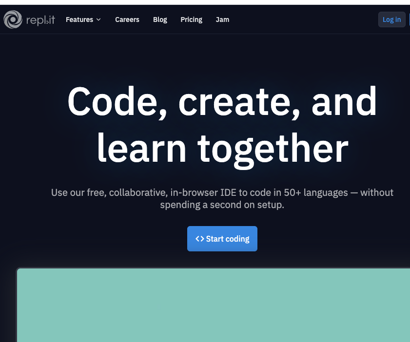
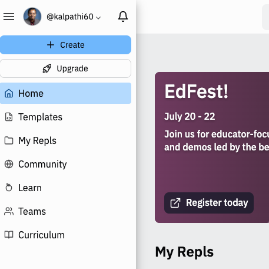
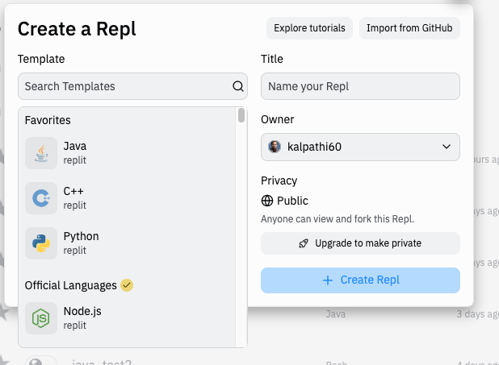
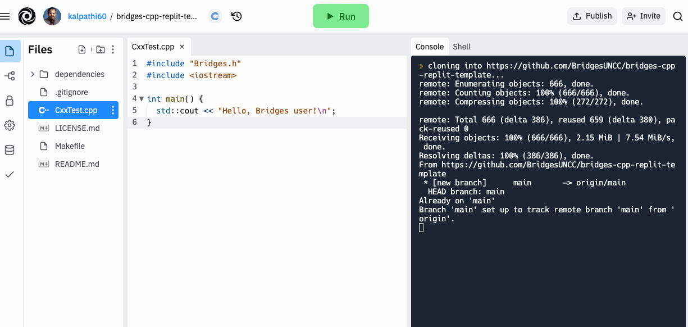
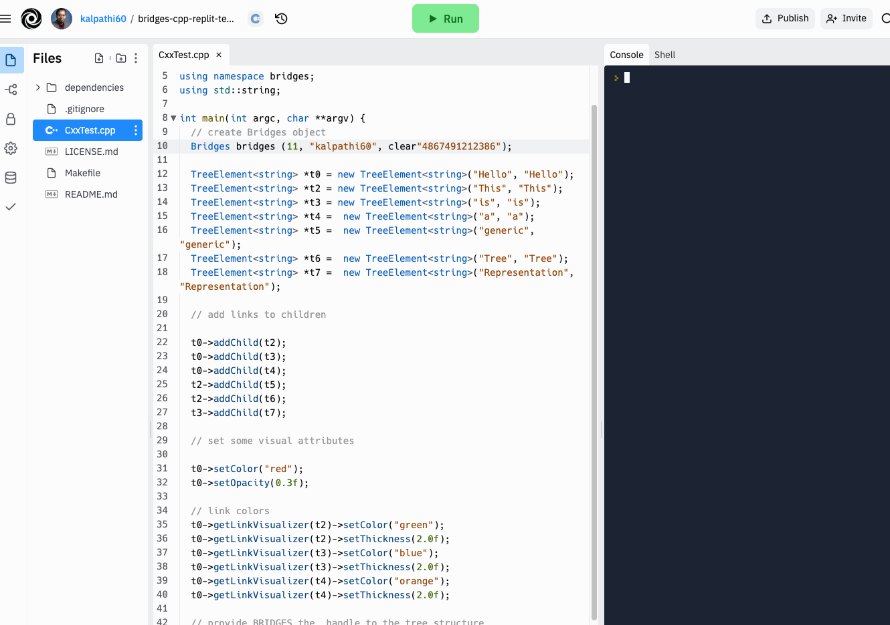
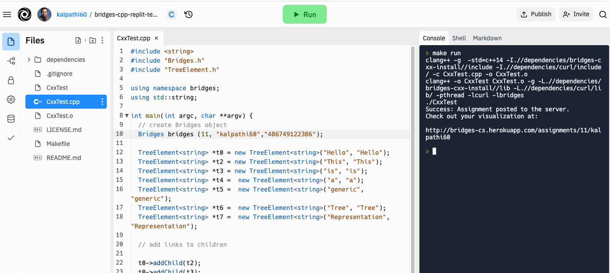

Step 1: Create Repl.it account
- If you do not have a Repl.it account navigate to the
Repl.it site and create a new account.
|

|
|
Step 2: Create BRIDGES Account
Visit the Bridges
main page
and create yourself an account by clicking the login button
on the top navigation bar. Click "Sign Up!" near the bottom of the page. Please ensure that
your user id is devoid of spaces, as it will be
used as part of the web link for your projects.
After creating your account, click
on the profile tab in the upper right corner to
view your profile. Here will see your account details and
API Key; you will need this API key later
in the tutorial (as well as in every BRIDGES program
you write). NOTE:Make sure to remember
your password.
|
Step 3: Get Installation template to install BRIDGES and its Dependencies
Repl.it allows Repls (programs) to be installed via a template mechanism;
You will import a BRIDGES C++ Replit template from a git repository, and
create an example BRIDGES program. This involves the following steps.
- Once you are logged in, look for the + Create button on the top
of the left side bar; click on the button (see adjacent image)
- Click on the Import from Github button on the top right of the
popup window. Click on from URL at the top of the window and enter the following URL: https://github.com/BridgesUNCC/bridges-cpp-replit-template. Finally, click on the Import from Github button.
- The BRIDGES program will load (takes a few seconds!) and you you will see the
IDE popup wih an editor on the left and a console on the right
(see adjacent image). Click on the file CxxTest.cpp and you will
see the trivial BRIDGES Hello World program.
|



|
Step 4: Load and run an example BRIDGES program
- Go to the
BRIDGES Tutorial site and copy/paste a C++ tutorial program into
the main window.
- Set an assignment number, and your credentials (assignment number, BRIDGES
user name and API key) in the line that creates the Bridges object at the
beginning of the program.
- Run the program by hitting the Run button
- You will see a link printed on the console. Use that to visualize the
output.
|


|
|
Please Note:
- For Instructors: The easiest way to get students set up with
replit is as follows:
- Create a C++ Replit template as detailed above (Steps 1,2, 3).
- Decide on the scaffold C++ program you want to create
for your students to get started on your assignment and
make that part of the Repl; if this has more than 1 source
file, then these can be added to the Makefile in the SRCS line.
- Save the repl and go back to your list of repls.
- Publish your repl (blue button on the top right); follow the
steps and you will see a link that can be transmitted to the
students
- Students can use the link to clone the repl and get started
on their assignment; they will need no additional setup, unless
they add new source files, or change their source file
names, etc (Makefile will need editing).
- Each new repl (BRIDGES program) will require the above steps to access
the BRIDGES API.
- Note that a specific BRIDGES program might require additional
include files. Refer to the BRIDGES C++ documentation and BRIDGES Tutorials for additional help.
- A typical C++ program will have multiple source and include files.
The additional source files must be specified in the Makefile that is
part of each project. Additional source files will be added to the
SRCS line in the Makefile. The example illustrated above shows a program
with a single source file, CxxTest.cpp
|